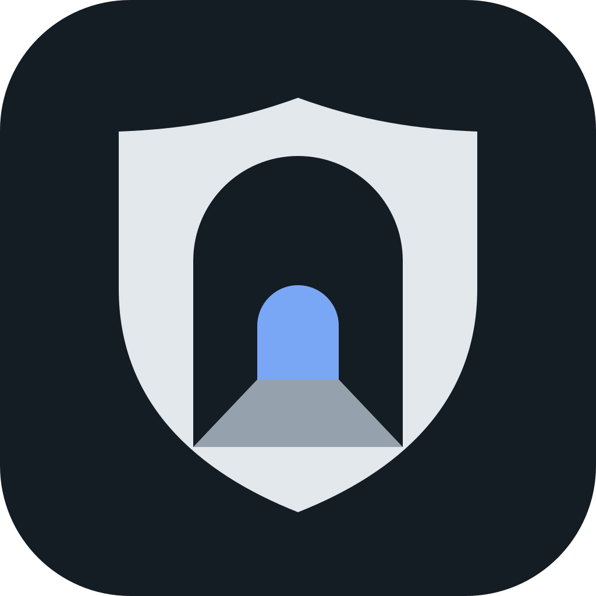
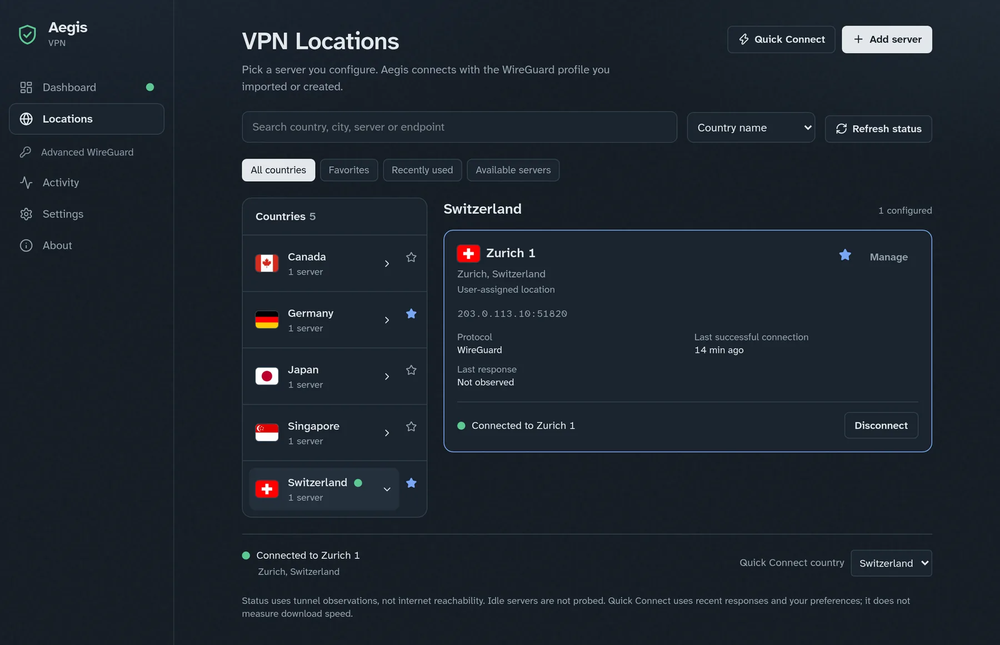

Bring your own configuration
Import a standard WireGuard .conf by file picker or drag and drop. Files with PostUp-style scripts are rejected instead of run. Private keys stay out of the interface.

Aegis VPNFree and open source WireGuard client for Linux. Version 0.1.0 pre-alpha.
Aegis connects the WireGuard configuration you already have and tells you, step by step, what it has confirmed: the tunnel is up, the server answered, DNS and IPv6 do not leak, the kill switch is blocking. It brings no servers of its own and uses no account.
Interactive demo with made-up servers. No VPN is created and nothing leaves this page.
Aegis VPN is a free, open source WireGuard client for Linux, built with Rust and Tauri 2. You import the WireGuard configuration you already have; Aegis brings no servers of its own and needs no account. Instead of one green badge, it shows each protection as Off, Unsupported, Configured, Verified or Failed, and reports Verified only after a real check: the tunnel is up, the server answered, and DNS and IPv6 do not leak. An optional kill switch uses a small Polkit-started helper that installs an nftables table blocking everything except the tunnel and its server. Config files containing PostUp-style scripts are rejected instead of run. Aegis uses the official WireGuard protocol with no custom cryptography, collects no telemetry and is licensed MIT or Apache-2.0. It is version 0.1.0, a pre-alpha Linux preview that has not been independently audited, and there is no Windows build yet.
Version @VERSION@ · Released @DATE_HUMAN@
Each protection is Off, Unsupported, Configured, Verified or Failed. Aegis never reports one from a setting alone, and it will not connect if a protection you asked for is unavailable.
Import a standard WireGuard .conf by file picker or drag and drop. Files with PostUp-style scripts are rejected instead of run. Private keys stay out of the interface.
“Tunnel up” only means the interface exists. Aegis then waits for the server to answer, and checks that the tunnel’s DNS server resolves a name before it calls the internet reachable.
After connecting, Aegis inspects the routes and resolver and shows Verified or Failed. IPv4-only tunnels get an IPv6 block so nothing leaves outside the tunnel.
Optional. A small helper, started through Polkit, installs an nftables table that blocks everything except the tunnel and its server. Local network access is off by default and the block is removed on disconnect.
Group the servers you configure by country, mark favorites, and use Quick Connect. Locations are labels you assign. Aegis never invents a distance, speed or load.
After a resume or a change of network, Aegis asks the server again and shows “No reply from the server” until it answers. It does not leave a stale confirmation on screen.
The interface follows your system theme. Both screens below use demo data only.


The app runs in the system tray, reconnects automatically with a bounded back-off, and exports a diagnostics bundle with keys removed.
This is pre-alpha software and has not been independently audited. The table lists what has actually been run.
| Platform | Status |
|---|---|
| Linux with NetworkManager | Works. Full tunnel, DNS and IPv6 leak tests, the kill switch and reconnect passed in a Debian 13 virtual machine, and a split-route test passed on a Debian/KDE desktop. Not yet run on hardware: real suspend and resume, Wi-Fi roaming, and the Ubuntu and Fedora resolver setups. |
| Linux without NetworkManager | Not supported. The app shows the backend as unavailable. |
| Windows 11 | Not usable. The service and tunnel are not implemented, so the app reports the backend as unavailable instead of pretending to connect. |
| macOS | Not planned. |
Test results, including failures, are kept in TEST_RESULTS.md.
There is no published release yet, so you build it from source. You need NetworkManager, Rust, Node 24 and pnpm. The commands below are for Debian and Ubuntu; the Linux guide lists the Fedora package names.
sudo apt install build-essential pkg-config libwebkit2gtk-4.1-dev \
libayatana-appindicator3-dev librsvg2-dev libssl-dev network-manager \
wireguard-tools systemd-resolvedgit clone https://github.com/mikeholp87/aegis-vpn.git
cd aegis-vpn/apps/desktop
pnpm install
pnpm tauri devAegis creates tunnels in NetworkManager named Aegis: <name>. Then use Locations → Add server → Import WireGuard Configuration, pick your .conf, and click Connect. Wait for “Server answered”.
The kill switch needs the root helper and its Polkit policy. Install them from the repository root, then reopen Aegis. Your server endpoint must be an IP address, not a host name.
cargo build --release -p aegis-helper --locked
sudo scripts/install-helper.sh install target/release/aegis-helperTo remove it, run sudo scripts/install-helper.sh uninstall. That also removes any firewall block first.
A downloaded .conf contains your private key, and browsers often save it readable by every user on the machine. Restrict it before you import it.
chmod 600 ~/Downloads/your-file.confThe simulated backend creates no tunnel and protects nothing. The app shows a permanent banner while it is on.
AEGIS_BACKEND=mock pnpm tauri devAegis lists its gaps. Please read them before you rely on it.
Switching servers while the kill switch is on is refused for now. The kill switch covers this computer’s own traffic, not traffic forwarded for containers or virtual machines. DNS protection needs systemd-resolved to manage /etc/resolv.conf. The checks look at routes and the resolver and do not replace a packet capture.
Aegis is a client. You supply a configuration from a provider or from a server you run. Handshake times need the root helper; without it Aegis infers a reply from received data. Restarting NetworkManager while a full tunnel is up can leave a firewall rule behind until reboot.
Read the threat model or see the security policy.
No. You bring a WireGuard configuration from any provider that offers one, or from your own server. Aegis only connects and checks it.
There is no telemetry or account. The optional connectivity checks do their lookups through the tunnel’s own DNS server, and Settings explains what they do. Update checks are off by default.
Private keys are kept by NetworkManager in its root-owned store and never reach the interface, the logs or the diagnostics export. The interface only learns whether a key exists.
Not yet. It is pre-alpha, it has not been independently audited, and parts of it have only been tested in a virtual machine. Use it with a server you control and verify the result yourself.
There is no date. The Windows service that creates tunnels with the official WireGuard component is still to be built and tested on a Windows 11 machine. The roadmap tracks it.
Aegis VPN is free and open source. If it saves you time, sponsoring helps me keep fixing bugs, answering issues and shipping updates. Every bit helps, and you can stop any time.
Sponsor on GitHubCan't sponsor? A star on GitHub also helps other people find it.